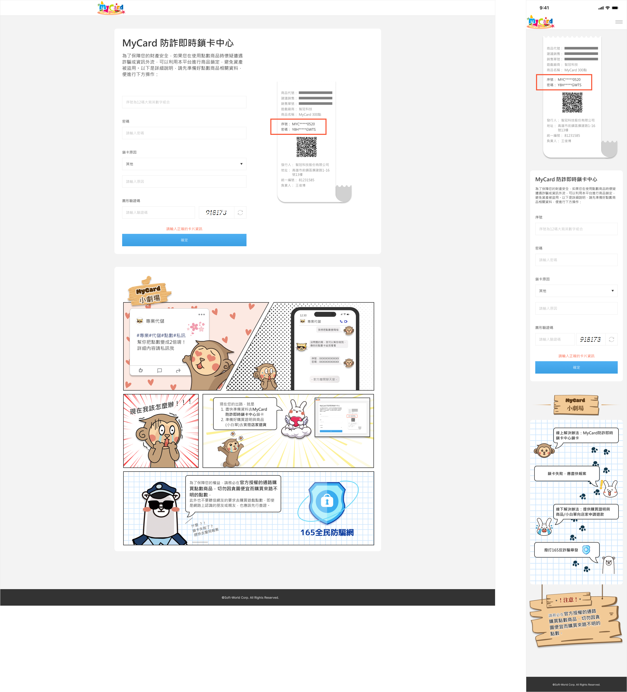
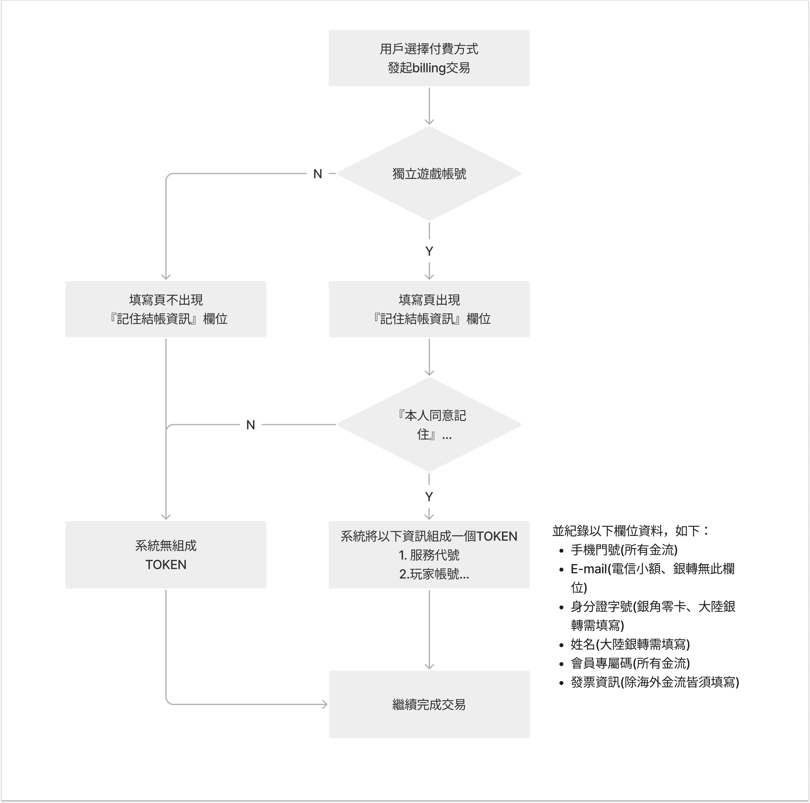
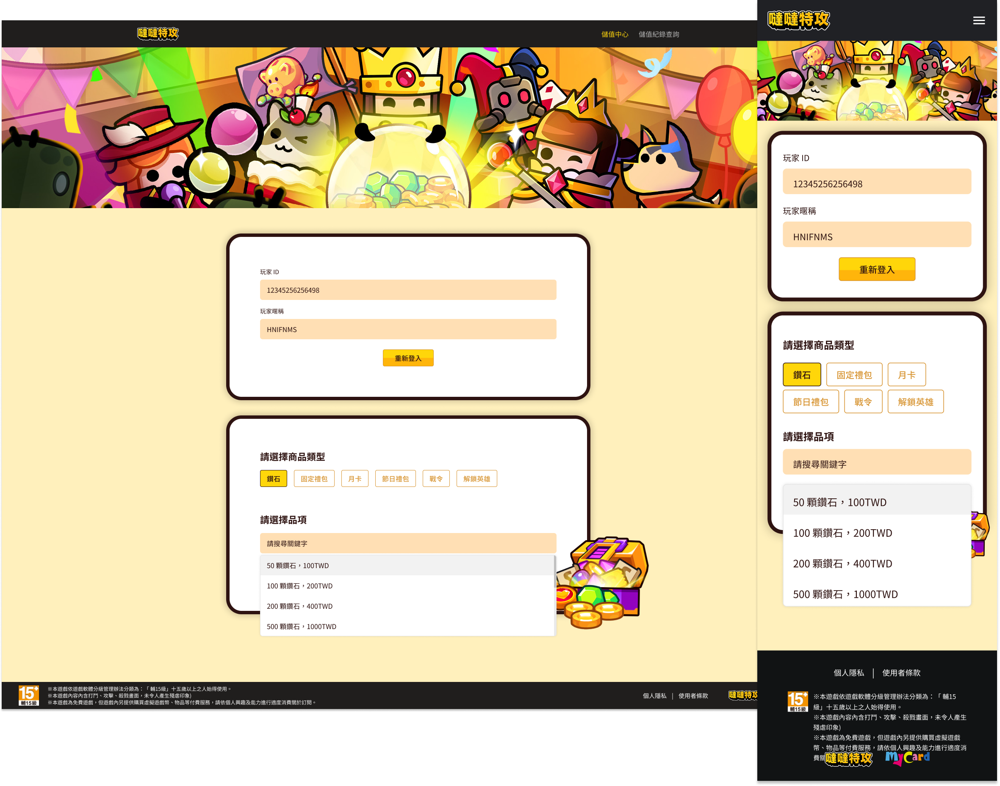

李文暐
我都經歷了些什麼呢？
我都經歷了些什麼呢？
官網後台改為版位上架，不僅提升了維護的便利、機動性，也讓使用體驗更加友好。協助後台模組設計時，以使用者角度出發，深入瞭解其目前遇到的痛點並進行改進，從而讓後續操作更加簡單流暢。
模擬使用者情境並融入公司吉祥物元素，以風趣且真實的畫面呈現，不僅協助消費者鎖卡，還能加深公司品牌在消費者心中的印象。
了解市場需求後，開發者平台成為主流，開發者可透過平台進行專案的上下架與維護，如雙平台或知名平台Xsolla，使串接不再依賴傳統的技術文件流程。在此專案中，擔任企劃與設計的角色。

風控設定若影響到非危險用戶的交易體驗，將可能造成巨大的損失。提出需求後，撰寫相關需求書，針對此功能設置「白名單」功能，使使用者單位不僅能進行風控，還能保障忠誠客戶的交易不受影響。
針對使用者的需求，優化使用者介面
APP小工具的左右拖曳，編輯的擴展性
針對需求商，繪製WEB、RWD的儲值頁面，提供完善的客製化服務。
